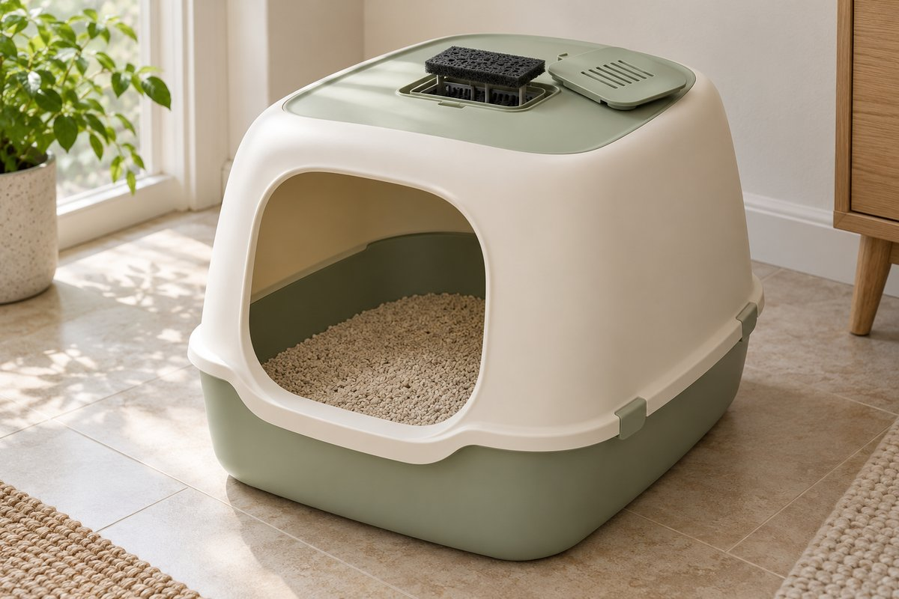
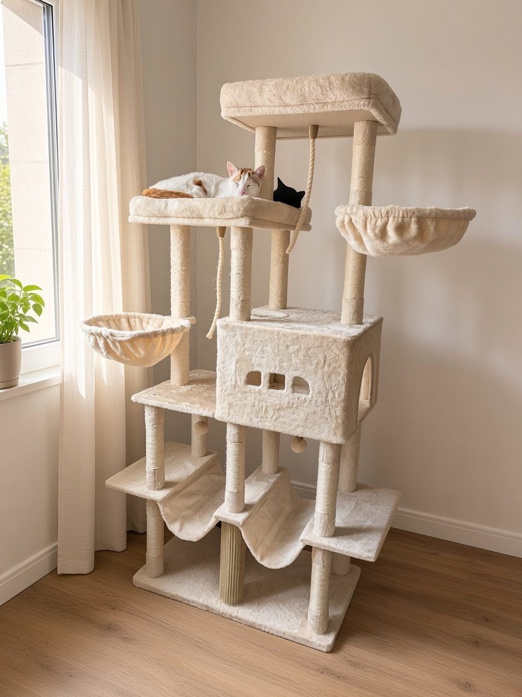
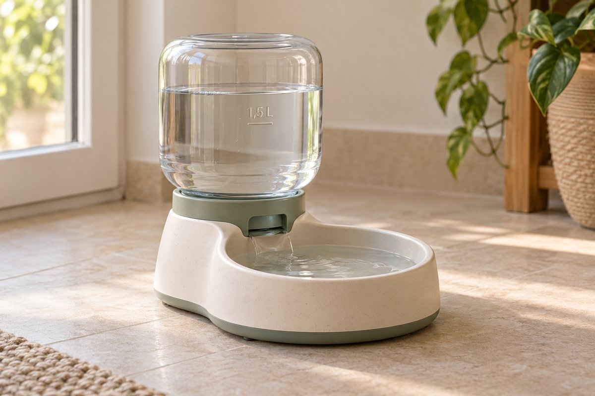
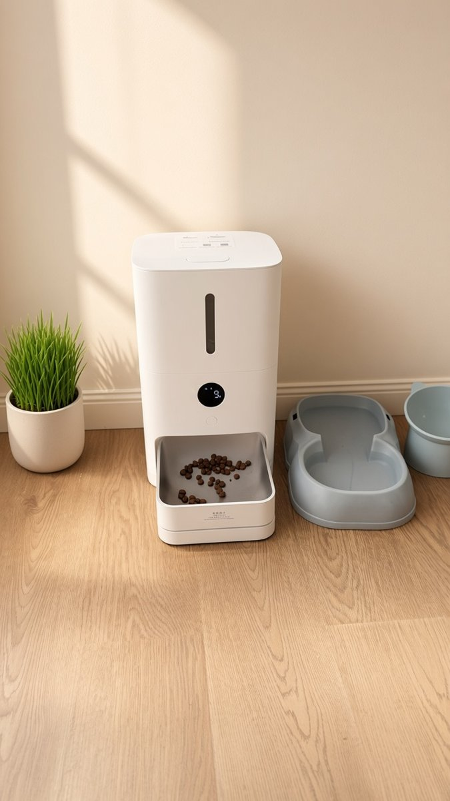

El rincón de tu mascota
Lo que usamos en casa con nuestros gatos, y los modelos vendidos por Amazon y con Prime que recomendamos.

ArenerosCon tapa o descubiertos

Árboles rascadoresEstables y que duren

Fuentes (bebederos)De gravedad, sin enchufe

Comederos automáticosCon app, para uno o dos gatos
Aviso de afiliados: En calidad de Afiliado de Amazon, obtenemos ingresos por las compras adscritas que cumplen los requisitos aplicables. Si compras desde nuestros enlaces, no te cuesta más.